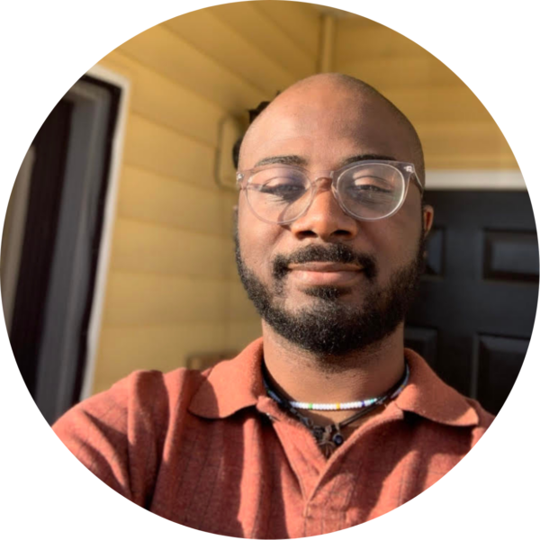

Passionate about escape rooms and has mastered the art of outsmarting tricky puzzles and locks.
Aspires to visit every U.S. National Park; already checked 15 off the list and counting..
Holds dual citizenship: American through his mother and Costa Rican through his father, embracing the best of both cultures.
Proud owner of a pet named 404—who, true to their name, is still not found.
Can write code so clean, even the bugs get lost
Once Won an Argument with a Compiler
Has a fraternal twin brother, making life double the adventure.
Named after the legendary photographer Ansel Adams by his artist mother, who believed in nurturing creativity from birth
Grew up with a menagerie of unusual pets, including a snake and an iguana—living proof that his love for the extraordinary started young
Firmly believes that a computer's 'mood' can make or break a coding session (and has seen it happen!)
Once made a program so efficient, even the computer was impressed
She speaks Chinese
Has an undeniable sweet tooth and a passion for all things candy
Lives in a shoes-off house, keeping things cozy and spotless
Thinks in functions and dreams in loops—coding truly runs in her veins
Once had a debate with a server—and won.
Has lived in Washington, California, and Tübingen Germany (just to study abroad for a semester!)
Passionate about crafting in all its forms, from building basic electronics with LEDs to sewing, crocheting, and even glasswork
Not a big fan of cooking, but when it comes to baking desserts and pastries, she's unstoppable in the kitchen
Enjoys horror movies despite being scared by them every time—because the thrill is worth it
Debugs code by day, dances the night away—mastering balance between logic and rhythm
Proudly left-handed, bringing a unique twist to everything they do
A secret we didn,t know: they love plants!
Mikelle prefers dark mode because the light attracts bugs!
Rumor has it they can code in their sleep—dedication at its finest
Equally skilled at debugging code and offering sage advice on a friend’s love life.